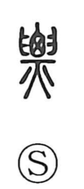

票

Kun: | On: hyo
ticket ・ ballot ・ vote ・ slip of paper
Explanation
票 is a compound graph. In very early writing it appears in a form like 興, combining 囟 (a human head), 臼 (two hands joined), and 火 (fire): it depicts holding the head of a corpse with both hands and burning it, the body standing out in the vigor of the flames. From this image arose senses of rising lightly, leaping, quivering, and quickness. As a phonetic it carries that nuance of speed and lightness in characters such as 標, 嫖, 慓, and 飄; in particular, 嫖, with additional fire, evokes the intensified force of the blaze. In later usage 票 shifted to mean a slip of paper or card, hence “ticket,” “receipt,” and “ballot,” as seen in words like 伝票 and 投票.